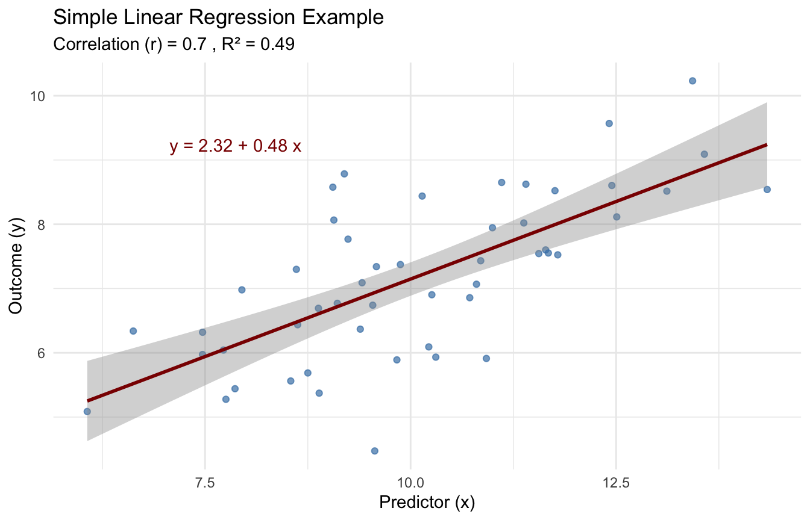
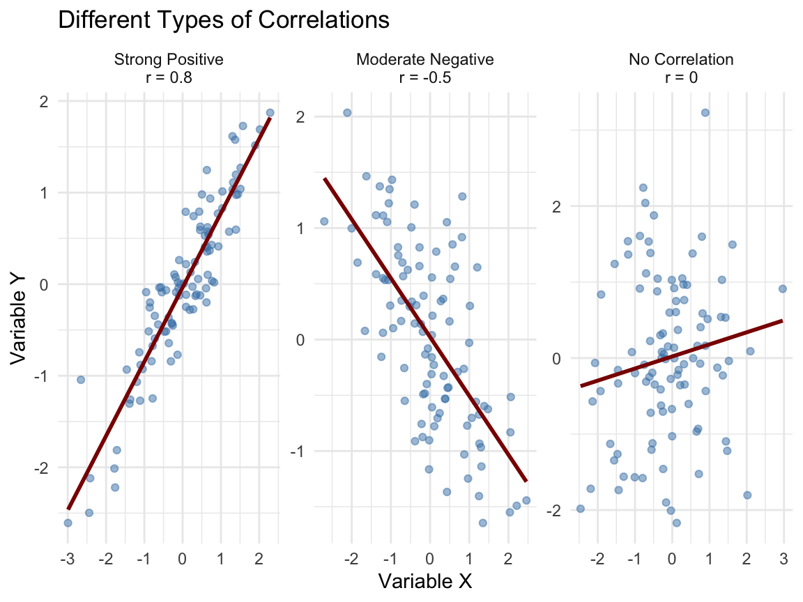
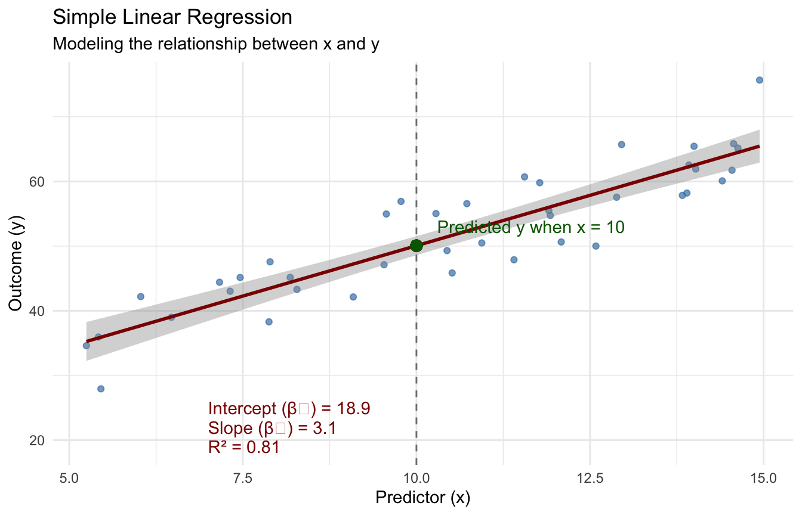
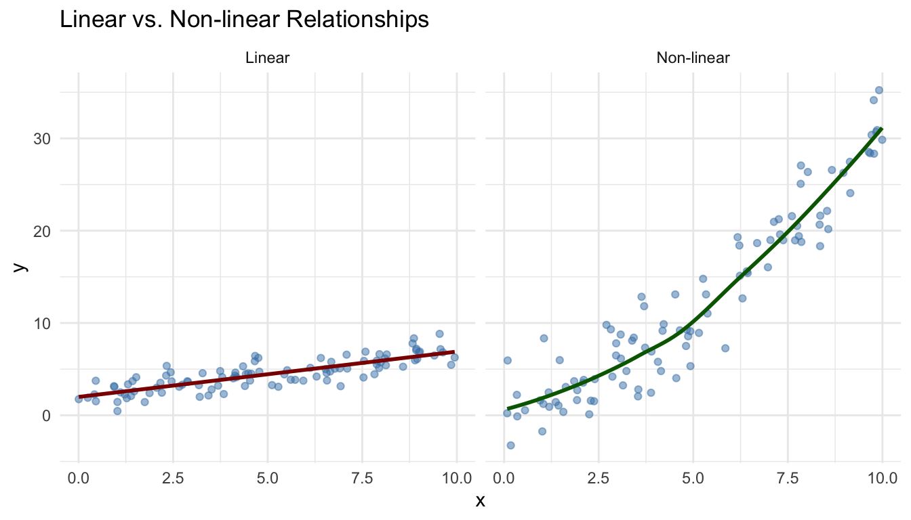

Reviewing Last Week: Correlation and Regression
What We Covered Last Week
Last week, we explored the fundamentals of correlation and simple linear regression:
Key Topics:
- Correlation measures (Pearson’s r)
- Simple linear regression
- Interpreting slope and intercept
- Assessing model fit (R²)
- Testing significance of relationships
- Assumptions of linear regression
Last week we covered two key topics that form the foundation for today’s lecture:
-
Correlation:
- A measure of the strength and direction of the linear relationship between two variables
- Pearson’s r ranges from -1 (perfect negative correlation) to +1 (perfect positive correlation)
- A correlation of 0 indicates no linear relationship
- We learned that correlation does not imply causation
-
Simple Linear Regression:
- Moving beyond correlation to model the relationship between variables
- The regression equation: y = β₀ + β₁x + ε
- β₀ (intercept): The predicted value of y when x = 0
- β₁ (slope): The change in y for a one-unit increase in x
- We can use regression for prediction and understanding relationships
- R² measures the proportion of variance in y explained by the model
These concepts serve as building blocks for today’s topic: the General Linear Model, which extends these ideas to create a unified framework for statistical analysis.
Correlation: Measuring Relationships
Pearson’s Correlation Coefficient (r):
- Measures the strength and direction of a linear relationship
- Ranges from -1 (perfect negative) to +1 (perfect positive)
- Calculated using standardized variables
- Formula: r = \frac{\sum{(x_i - \bar{x})(y_i - \bar{y})}}{\sqrt{\sum{(x_i - \bar{x})^2}\sum{(y_i - \bar{y})^2}}}
- Interpretation: r = 0.7 means a strong positive relationship

Correlation is a standardized measure of how two variables change together.
Key points about correlation:
- Correlation measures both the strength and direction of a linear relationship
- The correlation coefficient (r) is always between -1 and +1
- The sign indicates direction (positive or negative relationship)
- The magnitude indicates strength (closer to 1 or -1 = stronger relationship)
- A correlation of 0 suggests no linear relationship
Interpretation guidelines:
- |r| < 0.3: Weak correlation
- 0.3 < |r| < 0.7: Moderate correlation
- |r| > 0.7: Strong correlation
Important limitations:
- Correlation does not imply causation
- Correlation only detects linear relationships
- Correlation is sensitive to outliers
- Correlation doesn’t tell us the slope of the relationship
These limitations are why we often move from correlation to regression, which provides more information about the relationship between variables.
Simple Linear Regression: Modeling Relationships
The Simple Linear Regression Model:
y = \beta_0 + \beta_1 x + \varepsilon
Where:
- \beta_0 is the intercept (y when x = 0)
- \beta_1 is the slope (change in y per unit of x)
- \varepsilon is the error term
Key statistics:
- R² (coefficient of determination): Proportion of variance explaine
- p-value: Tests if the relationship is statistically significant

Simple linear regression extends correlation by modeling the relationship between variables. While correlation tells us about the strength and direction of a relationship, regression gives us an equation to predict one variable from another.
Components of the regression model:
-
Intercept (β₀): The predicted value of y when x = 0
- May not always be meaningful in real-world contexts
- Example: If x = years of experience, β₀ = starting salary with zero experience
-
Slope (β₁): The change in y for a one-unit increase in x
- The practical effect size of the relationship
- Example: Each additional year of experience increases salary by $3,000
-
Error term (ε): The difference between predicted and actual values
- Represents what our model doesn’t explain
- Assumed to be normally distributed with mean zero
Evaluating the model:
-
R²: The proportion of variance in y explained by the model
- Ranges from 0 to 1 (sometimes expressed as a percentage)
- Example: R² = 0.75 means the model explains 75% of the variation in y
-
Statistical significance: Testing whether β₁ is significantly different from zero
- If significant, we have evidence of a relationship between x and y
- Reported as a p-value (e.g., p < 0.05)
Regression is a powerful tool that forms the foundation for today’s topic: the General Linear Model, which extends these concepts to more complex situations.
Connecting to Today’s Topic: The General Linear Model
Today, we’ll build on these concepts to explore the General Linear Model (GLM), which:
- Extends regression to include multiple predictors
- Provides a unified framework for various statistical tests
- Shows how t-tests, ANOVA, and regression are related
- Allows us to model complex relationships
- Helps us understand which factors truly matter when controlling for others
Moving from:
y = \beta_0 + \beta_1 x + \varepsilon
To:
y = \beta_0 + \beta_1 x_1 + \beta_2 x_2 + ... + \beta_n x_n + \varepsilon
Today’s lecture builds directly on the foundation we established last week with correlation and simple regression. We’re now ready to take the next step by exploring the General Linear Model (GLM).
The progression in our learning:
Correlation: We started by measuring the strength and direction of relationships between pairs of variables.
Simple Linear Regression: We then moved to modeling these relationships with an equation that allows prediction and deeper understanding of how one variable affects another.
General Linear Model: Today, we’ll extend this framework to include multiple predictors and show how this unifies many statistical tests under one conceptual umbrella.
Key extensions in the GLM:
Multiple predictors: Real-world outcomes are rarely influenced by just one factor. The GLM allows us to include multiple predictors to better model complex phenomena.
Categorical predictors: We’ll see how to include categorical variables (like gender, treatment group, etc.) in our models.
Controlling for variables: The GLM allows us to understand the unique effect of each predictor while controlling for other factors.
Unified framework: Perhaps most importantly, we’ll discover how many statistical tests you’ve already learned (t-tests, ANOVA, etc.) are actually special cases of the GLM.
Understanding the GLM will not only simplify your conceptual understanding of statistics but also give you a more powerful and flexible approach to data analysis.
Key Terms to Remember
As we move forward, keep these key terms in mind:
From Correlation & Regression:
- Correlation coefficient (r): Measures strength and direction of relationship
- Intercept (β₀): Value of y when x = 0
- Slope (β₁): Change in y per unit change in x
- R²: Proportion of variance explained
- Residuals: Differences between observed and predicted values
New Terms for Today:
- Multiple regression: Model with multiple predictors
- General Linear Model (GLM): Unified framework for statistical tests
- Predictor variables: Factors that may explain the outcome
- Categorical predictors: Non-numeric variables (e.g., gender)
- Controlling for variables: Isolating the effect of one predictor
Any Questions Before We Begin?
Let’s briefly address any questions about last week’s material before moving forward.
Common Questions:
- How do we interpret the slope and intercept in practical terms?
- What’s the difference between correlation and causation?
- When should we use correlation vs. regression?
- How do we know if our regression model is good?
- What if the relationship isn’t linear?

Before we move on to new material, let’s address some common questions about correlation and regression.
How do we interpret the slope and intercept in practical terms?
- The intercept (β₀) is the expected value of y when x = 0. In practice, this may not always be meaningful if x = 0 is outside our observed range.
- The slope (β₁) tells us how much y changes for a one-unit increase in x. This is often the most useful part for practical interpretation.
- Example: If predicting salary from years of experience with β₁ = 3000, each additional year of experience is associated with a $3,000 increase in salary.
What’s the difference between correlation and causation?
- Correlation simply identifies that two variables change together in a predictable way
- Causation means that changes in one variable directly cause changes in another
- To establish causation, we typically need controlled experiments or strong causal inference methods
- The classic example: Ice cream sales and drowning deaths are correlated (both increase in summer), but one doesn’t cause the other
When should we use correlation vs. regression?
- Use correlation when you simply want to measure the strength and direction of a relationship
- Use regression when you want to:
- Predict one variable from another
- Understand the effect size (how much y changes when x changes)
- Control for other variables (in multiple regression)
How do we know if our regression model is good?
- R² tells us the proportion of variance explained (higher is better)
- Statistical significance (p-value) tells us if the relationship is likely real or due to chance
- Examining residuals helps identify patterns the model missed
- Checking model assumptions confirms our statistical inferences are valid
What if the relationship isn’t linear?
- Both correlation and simple linear regression assume a linear relationship
- Non-linear relationships may be missed or underestimated by these methods
- Solutions include:
- Transforming variables (e.g., log transformation)
- Using non-linear regression models
- Using more flexible modeling approaches
These concepts provide the foundation for today’s topic: the General Linear Model, which extends regression to more complex situations while maintaining a unified framework.